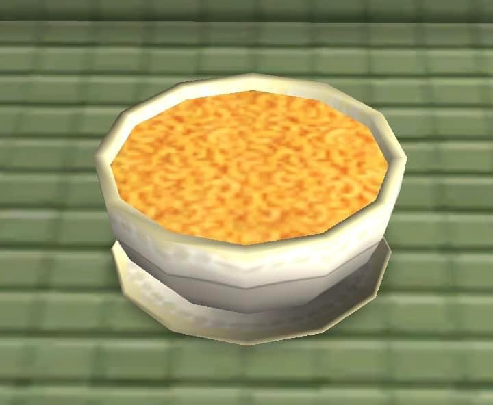

Mac and cheese

Description
This is a simple recipe for baked mac and cheese!
Ingredients
- 1 container of cavatappi noodles or other noodles of your choice
- 3 tbsp unsalted butter
- 3 tbsp of flour
- 1/2 cup heavy cream
- 4 oz cream cheese
- Shredded colby jack
- Shredded extra sharp cheddar
- Shredded mozzerella
- 1 tbsp dijon mustard
- Cajun seasoning
- Smoked paprika
- Garlic powder
- Pepper
Seasonings are to taste
Steps
- Boil noodles by following the directions on the container. Once cooked, rinse off the noodles in cool water to stop the cooking
process.
- Mix shredded cheese and seasonings separately to make sure they are well combined.
- Prepare the roux by melting 3 tbsp of unsalted butter in a pot on medium heat. Add half of the seasoning mixture, flour, cream cheese, and heavy cream to
that pot and whisk. Once well whisked, add in the rest of the seasoning mixture and 1 tbsp of dijon mustard.
- Prepare the cheese sauce by lowering the heat and gradually adding half of the shredded cheese while whisking.
- Combine the boiled noodles with the cheesy sauce and mix so noodles are well covered.
- Preheat oven to 400 degrees Fahrenheit. While the oven is preheating, get a large pan to bake mac and cheese in. In your pan, place half
of the mac and cheese in the container, cover it with the leftover shredded cheese. Add another layer of mac and cheese and top it off with the remaining
shredded cheese. Season the top layer with smoked paprika. Cover with foil.
- Bake for 30 minutes at 400 degrees Fahrenheit with the foil on. Then for an additional 10 minutes with the foil off.
- Let cool, then enjoy!